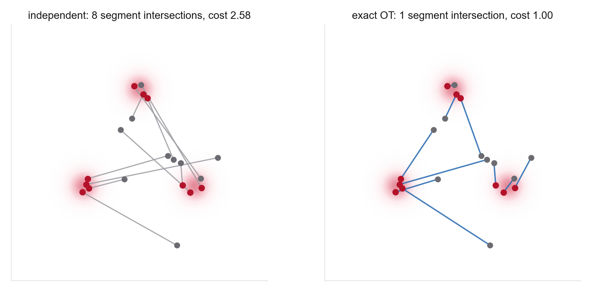
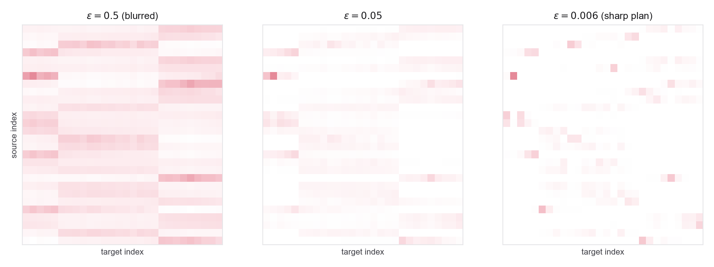
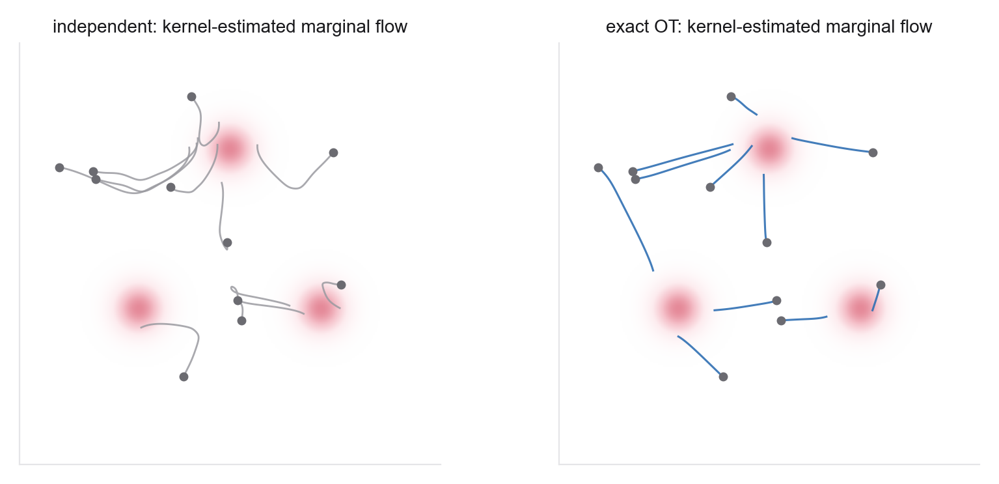
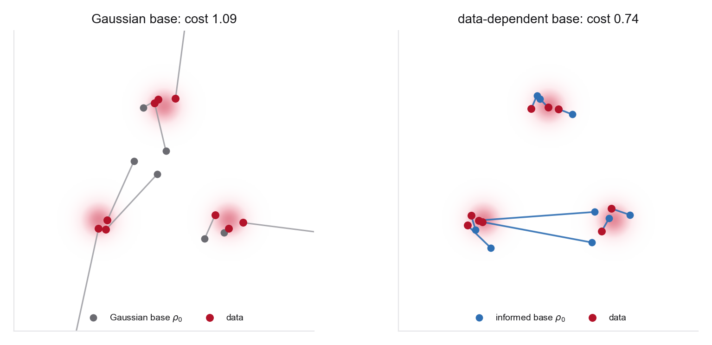

These notes condense the Week 5 readings into the ideas you need, organized by concept rather than by paper. Notation continues from Weeks 3-4, with base/noise at \(t=0\), data at \(t=1\), and the straight interpolant \(x_t=(1-t)x_0+t x_1\) unless stated otherwise. Throughout, the interpolant is the deterministic \(\sigma=0\) case; several constructions in Tong et al. carry a positive Gaussian smoothing \(\sigma\), and there the finite-\(\sigma\) endpoint is a smoothed version of the target rather than the target itself, with equality recovered in the \(\sigma\to0\) limit. The through-line: a valid coupling \(\pi(x_0,x_1)\) preserves the prescribed endpoint marginals but changes the intermediate path and regression targets. Quadratic OT minimizes endpoint displacement, not a generic curvature or stiffness functional, and the base distribution is a separate design choice.
5.1From path to pairing
The conditional path, learned target, sampler, endpoint coupling, and base distribution are distinct design axes. Earlier weeks usually drew \((x_0,x_1)\) independently, with a fresh \(x_0\sim\rho_0\) for each \(x_1\sim q\). This week changes that joint sampling rule while holding the path family and network interface fixed. The loss retains the same regression form, but its sampled targets, numerical value, induced marginal path, and practical approximation difficulty all change.
5.2What a coupling leaves fixed
A coupling is a joint law \(\pi(x_0,x_1)\) whose marginals are the base \(\rho_0\) and the data \(q\). The independent coupling \(\pi=\rho_0\otimes q\) is one point in this set; every other keeps the same edge distributions but correlates the two draws. The first thing to be clear about is how little a coupling is allowed to change. Because the interpolant's endpoints are \(x_0\) at \(t=0\) and \(x_1\) at \(t=1\), and the coupling fixes their marginals, the boundary laws \(\rho_0\) and \(\rho_1=q\) are the same for every \(\pi\). And because the marginalization argument of Weeks 3-4 never used independence, only that the pair has the right marginals, the whole derivation survives verbatim: the marginal velocity \(b_t(x)=\mathbb E_\pi[\dot X_t\mid X_t=x]\) still solves the continuity equation for the induced marginal law \(\rho_t\), and the tractable regression \[ \mathcal L_{\rm CFM}(\theta)=\mathbb E_{\,t\sim\mathrm{Unif}[0,1],\;(X_0,X_1)\sim\pi} \big\|b_\theta(X_t,t)-\dot X_t\big\|^2 \] has \(b_t\) as its population minimizer: over unrestricted square-integrable vector fields the minimizer is \(b_t(x)=\mathbb E[\dot X_t\mid X_t=x]\) for \(dt\,\rho_t(dx)\)-almost every \((t,x)\). In a restricted neural-network class, training finds an approximation to that field rather than the field itself. Equivalently, the corresponding marginal FM loss differs from this conditional loss by a parameter-independent constant, so their parameter gradients agree.
This is an ideal population statement, not a guarantee that every trained network exactly generates \(q\). Endpoint recovery also requires an appropriate population-optimal field, existence and regularity of the ODE, sufficient model and optimization accuracy, and accurate numerical integration. A coupling can therefore preserve the intended endpoint construction while still changing finite-model and finite-solver error.
5.3Conditional energy and velocity ambiguity
The velocity the network learns is not the per-sample velocity \(\dot x_t=x_1-x_0\); it is the marginal velocity, the average of \(\dot x_t\) over all endpoint pairs whose interpolant passes through the current state \(x\). Under an independent coupling, nearby conditional paths can imply conflicting velocities. Their conditional mean need not resemble any individual velocity, creating a nonzero regression residual and often a more complicated marginal field. ODE uniqueness concerns two trajectories occupying the same state at the same time; ordinary intersections of line segments in a two-dimensional drawing are only a heuristic diagnostic.
For the straight conditional interpolant, \[ \mathbb E\!\int_0^1\|\dot X_t\|^2\,dt=\mathbb E_\pi\|X_1-X_0\|^2. \] This is the conditional-path energy, equal to the quadratic endpoint cost. The marginal velocity has kinetic action \[ \int_0^1\mathbb E\|b_t(X_t)\|^2\,dt \leq \mathbb E_\pi\|X_1-X_0\|^2, \] by conditional Jensen. The gap is \(\int_0^1\mathbb E\|\dot X_t-b_t(X_t)\|^2dt\), the integrated conditional velocity variance and the population Bayes residual for predicting \(\dot X_t\) from \((t,X_t)\). It is irreducible given those regression inputs and an unrestricted predictor; a finite network carries approximation and optimization error on top of it. Equality holds when the conditional velocity is determined by \((t,X_t)\). Transport cost is therefore neither curvature nor stiffness: for example, a large translation has high cost and exactly straight paths. Lower ambiguity can improve finite-model or solver behavior, but that is an empirical consequence to measure.
5.4Optimal transport, static and dynamic
Quadratic optimal transport minimizes a precise quantity: expected squared endpoint displacement. The Kantorovich problem asks for \[ W_2^2(\rho_0,q)=\min_{\pi\in\Pi(\rho_0,q)}\int\|x_1-x_0\|^2\,\mathrm d\pi(x_0,x_1), \qquad \pi^\star\in\operatorname*{arg\,min}_{\pi\in\Pi(\rho_0,q)}\int\|x_1-x_0\|^2\,\mathrm d\pi, \] over all couplings with the prescribed marginals. Write the minimizer with \(\in\) rather than \(=\): the arg min is a set, and as noted below the optimizer need not be unique or map-induced. If \(\rho_0\) is absolutely continuous with respect to Lebesgue measure and the distributions have finite second moments, Brenier's theorem gives an a.e.-unique optimal map \(T=\nabla\phi\) for a convex \(\phi\). Its interpolation \(X_t=(1-t)X_0+tT(X_0)\) is the Wasserstein displacement interpolation. Under the regularity needed for this map-induced flow, the endpoint velocity is determined by the current state, so conditional and marginal velocities agree \(dt\,\rho_t(dx)\)-almost everywhere along the displacement interpolation. A general Kantorovich optimizer need not be a map.
Empirical equal-weight OT is a different case. With the same number of source and target samples, an optimal plan can be chosen as a permutation, so every displayed source is paired to exactly one displayed target. That conclusion follows from the geometry of the assignment polytope, not from Brenier's theorem, and it is an existence statement rather than a uniqueness one: when the cost matrix has ties, several optimal permutations and their convex combinations can all be optimal.
The same optimal value has a dynamic form, and it is the one that connects OT to this course's velocity fields. The Benamou-Brenier theorem writes the squared-Wasserstein distance as a least-action problem over measures and velocity fields, \[ W_2^2(\rho_0,q)=\min_{\rho_t,v_t}\ \int_0^1\!\!\int\|v_t(x)\|^2\,\mathrm d\rho_t(x)\,\mathrm dt \quad\text{s.t.}\quad \partial_t\rho_t+\nabla\!\cdot(\rho_t v_t)=0,\ \rho_0,\rho_1\text{ fixed}, \] the minimum kinetic action over all sufficiently regular flows carrying \(\rho_0\) to \(q\). Under the map assumptions above, the minimizer is the displacement interpolation. The Kantorovich and Benamou-Brenier problems are equivalent static and dynamic formulations of \(W_2^2\); they are not Legendre duals of each other. Each formulation has a separate dual problem.

5.5Entropic OT and the Sinkhorn algorithm
Exact OT between two empirical distributions of size \(n\) is a linear program with \(n^2\) variables. A full-dataset plan is generally too expensive to recompute inside a training loop, although a small exact assignment can be practical within a minibatch. Entropic regularization provides a fast, smooth alternative. This whole section is the finite discrete problem: write the two weight vectors as \(a\) and \(b\), and the plan as a matrix \(P\). Add an entropy term to the transport cost, \[ P^\varepsilon=\operatorname*{arg\,min}_{P\in\Pi(a,b)}\ \langle P,C\rangle-\varepsilon\, H(P),\qquad H(P)=-\!\sum_{ij}P_{ij}\big(\log P_{ij}-1\big), \] and the problem becomes strictly convex, with a factorized scaling form for its solution: the optimal plan is a diagonal rescaling of the Gibbs kernel \(K_{ij}=e^{-C_{ij}/\varepsilon}\), \[ P^\varepsilon=\operatorname{diag}(u)\,K\,\operatorname{diag}(v), \] for two positive vectors \(u,v\) fixed by the marginal constraints. Those constraints are two equations, \(P\mathbf 1=a\) and \(P^\top\mathbf 1=b\), and the Sinkhorn algorithm solves them by the obvious alternation: rescale the rows so they sum to \(a\), rescale the columns so they sum to \(b\), repeat. Each half-step uses matrix-vector operations that parallelize well. For positive \(K\) the alternating scaling converges, though small \(\varepsilon\) conditions the problem poorly and typically increases the iteration count.
The regularization \(\varepsilon\) is a dial between two familiar couplings, and in the finite discrete problem the two limits are these. As \(\varepsilon\to\infty\) the entropy dominates and \(P^\varepsilon\) converges to the independent coupling \(a b^\top\), the maximally spread-out pairing. As \(\varepsilon\to0\) the cost dominates and the limit points of \(P^\varepsilon\) are unregularized OT optimizers; when that optimizer is not unique, the entropic limit selects the maximum-entropy optimal plan under the usual finite-dimensional assumptions. A permutation limit is expected only in the equal-size, uniform empirical assignment setting with an appropriate unique optimum; general OT plans may split mass. Because Cuturi parameterizes by \(\lambda=1/\varepsilon\), state these limits as \(\varepsilon\to\infty\) and \(\varepsilon\to0\) rather than as "large" and "small" regularization, which reverse between the two conventions.

5.6Minibatch OT and OT-CFM
Computing a full-data OT plan would require a matrix spanning the dataset and is infeasible at scale. The practical move is the minibatch approximation: inside each training batch of \(m\) base and \(m\) data samples, compute either a small exact OT plan or an entropically regularized plan with Sinkhorn, sample pairs from that plan, and regress the velocity on those pairs. This is the coupling step in OT-CFM. It costs one small OT solve per batch (Sinkhorn only in the regularized case) and is a drop-in change to the sampling of \((x_0,x_1)\) in an otherwise ordinary flow-matching loop.
The subtlety is what the minibatch plan actually is. Averaging the random size-\(m\) batch construction defines a population coupling \(\pi^{(m)}\), and \(\pi^{(m)}\) generally differs from the population OT coupling \(\pi^\star\): an OT matching within a random size-\(m\) subset pairs points that the full OT plan would not. Resist calling it an unbiased or biased estimator of \(\pi^\star\). A batch plan is supported on random batch points and does not live in the same space as a fixed population plan. Under the assumptions in Pooladian et al., as \(m\to\infty\) the optimal marginal vector field induced by BatchOT attains vanishing Joint-CFM objective and vanishing straightness, and the flow map it induces attains the optimal transport cost \(W_2^2\). That statement concerns the induced field and its map, not the cost of any single minibatch permutation, and it is asymptotic rather than a claim that a finite batch "reaches the support size." The crucial separate fact is that the random minibatch construction has the correct population marginals: averaging over random batches returns \(\rho_0\) and \(q\). Therefore it defines a valid population coupling and the CFM identity in §5.2 applies to the marginal path induced by that coupling.
This does not prove that a finite trained sampler is unbiased, nor that every batch size reduces variance or solver cost. Small batches may give a poor approximation to population OT and a harder learned field; finite model, optimization, and integration errors can then distort generated basin populations. Diagnose the coupling separately from the generated distribution.

5.7Rectification as coupling improvement
Reflow, from rectified flow, updates the endpoint coupling without solving OT. Given the current deterministic ODE flow map \(\Phi_1\), form the coupling \((X_0,Z_1)\) with \(Z_1=\Phi_1(X_0)\) and retrain on the straight interpolants between those endpoints. Be precise about what this does and does not achieve. The induced coupling is already deterministic the moment the flow map is integrated, since \(Z_1\) is a function of \(X_0\); repeated reflow is aimed at reducing the straightness functional and the conditional-velocity residual, not at manufacturing determinism it already has. In the exact population construction, Liu et al. prove marginal preservation (Theorem 3.3) and non-increase of convex displacement costs \(\mathbb E[c(X_1-X_0)]\) for convex \(c:\mathbb R^d\to\mathbb R\) (Theorem 3.5), where \(c\) applies to the displacement rather than to the two endpoints separately. They also show that recursive rectification straightens at an \(O(1/K)\) rate (Theorem 3.7).
Those properties do not identify the result with quadratic OT. The Rectified Flow paper explicitly notes that recursive rectification does not generally attain a \(c\)-optimal coupling, except for a special one-dimensional result. Hertrich et al. sharpen the gap considerably. On disconnected supports they exhibit couplings that are fixed points of the gradient-constrained rectification operator \(R^p\) with zero constrained loss and are still not optimal; their positive result recovers the equivalence only under full support, \(\operatorname{supp}(X_t)=\mathbb R^d\), plus smoothness and rectifiability. Their sharpest statement is a gap in cost, not a distance between couplings: the constrained loss and the endpoint-marginal \(W_2\) separation can both be made arbitrarily small while the kinetic action and the endpoint quadratic cost stay near a positive constant, against an optimum of zero. The available convergence guarantees bound the loss, and the loss does not bound the cost gap. Their verdict is that enforcing a gradient constraint on rectified flows is "in general, not a reliable method for computing optimal transport maps." OT-CFM and reflow should therefore be contrasted, not treated as approximations to the same coupling: OT-CFM solves either an exact or an entropically regularized OT problem within each batch, whereas reflow adopts the deterministic coupling induced by the current learned flow and requires another training round. Learned-flow error also means its generated endpoint marginal need not be exactly the data marginal.
5.8Data-dependent bases
Everything so far re-pairs a fixed base to the data. The second lever changes the base itself. Nothing in the interpolant requires \(\rho_0=\mathcal N(0,I)\), but be careful how far "you only need to sample it" reaches. To define the sample-based interpolation and regression objective, the source need only be sampleable. Exact transport by a regular deterministic ODE additionally requires suitable regularity and source-target compatibility, and score objectives impose their own density and smoothness requirements. If another sampleable distribution is closer to the target in an appropriate transport geometry, using it as the base can reduce the minimum endpoint cost. Mere visual overlap is not a proof of closeness; \(W_2\), a task-specific quotient metric, or a natural paired cost should be measured.
A corrupted observation is a concrete data-dependent base: Albergo et al. generate a base conditionally on a target for tasks such as inpainting and super-resolution. The physical version is not hypothetical either. Luo et al. bridge coarse force-field geometries to DFT equilibrium structures, and unrelaxed adsorbate-catalyst complexes to their relaxed states; FlowLLM replaces a uniform crystal base with a language model's metastable output. Both still need what any base needs: a sampleable source law and a justified coupling to the target. Be careful about how Luo et al. differ from this week's framing, because the obvious statement is wrong: they do have an explicit source marginal, \(q_{\rm data}(R^{t_0})\), and their bridge is proved to preserve the paired joint law \(q_{\rm data}(R^{t_0},R^{t_1})\). The difference is that theirs is a conditional bridge over a task-given joint distribution. It runs from \(R_0=R^{t_0}\) to sample \(q_{\rm data}(R^{t_1}\mid R^{t_0})\), and paired examples supply the coupling. That is not an unconditional source-to-data flow whose base happens to be a physical ensemble. Composition or space group is usually conditioning information, not itself a base distribution. Base design and conditioning should be kept conceptually separate.

5.9Where couplings help science, and where they mislead
The couplings and bases of this week are efficiency levers, but on scientific targets they are also modelling choices. One important case is symmetry. Many molecular energy models are invariant under global translations, proper rotations, and permutations of identical atoms. A normalizable molecular density on unrestricted Cartesian space cannot itself be globally translation invariant, so the equivariant-flow-matching construction removes translation by working with mean-free configurations. It then computes the OT cost modulo the chosen symmetry group. Configurations related by that group are equivalent for the modelling objective, while a naive Euclidean OT plan measures a large cost between them and wastes capacity undoing gauge motion. Choose the group for the task rather than by reflex: quotienting by reflections is wrong for chiral targets, where a reflection can leave an idealized energy unchanged while exchanging physically distinct enantiomers, which is why the practical constructions here restrict to proper rotations and handle chirality separately. The exact minimization over that joint group is infeasible in practice, so the cost is approximated by a sequential alignment (an optimal permutation, then a rotation). That approximates the symmetry-reduced cost rather than solving an exact quotient-space OT. Periodic crystal models handle global translations separately on the torus. The empirical benefit is task-dependent: in the cited alanine experiment, standard and equivariant OT trade places across metrics rather than one universally dominating.
The failure modes are just as concrete. Finite-batch approximation: on a strongly multimodal target, small-batch OT can be far from the population OT coupling even though its population endpoint marginals remain correct. A finite model or solver may then distort basin populations, so coupling diagnostics and generated samples should both be checked. Base mismatch: under the usual regularity assumptions an ODE flow map is invertible, and therefore constrains exact transport between distributions with topologically incompatible supports; a poorly chosen base can make approximation difficult. Keep the two claims apart, because they are routinely conflated: invertibility does not preserve the number of density modes, so a unimodal full-support base can perfectly well be mapped to a multimodal full-support density. It is topology, not multimodality, that obstructs. Cost: OT and symmetry reduction add per-batch computation, and whether improved regression geometry repays it depends on the model and sampling budget.
5.10Looking ahead: straightness becomes one step
This week used couplings and bases to reduce conditional displacement and, in favorable cases, velocity ambiguity. Every well-posed deterministic ODE already defines an endpoint map; the practical question is how accurately a finite model and solver approximate it. Week 6, one-step and few-step generation, studies methods that learn or distill a finite-time map or a consistency relation. Consistency models, progressive distillation, and flow-map methods all reduce generation to one or a few network evaluations rather than the many-step ODE this week made cheap. They do not all learn the same mathematical object. Low-ambiguity paths can help but do not guarantee one-step quality. Further out, Week 9 studies the Schrödinger bridge: minimize path-space relative entropy to a chosen reference process subject to endpoint constraints. Brownian reference dynamics connect it to entropic dynamic OT, but it is not a universal stochastic optimum of the couplings in this week.
5.11One-page recap
- A valid coupling \(\pi(x_0,x_1)\) preserves the prescribed endpoint laws but changes the intermediate marginal path, regression targets, loss value, and marginal velocity. Exact endpoint generation additionally requires an accurately learned, regular field and accurate integration.
- For a straight conditional interpolant, \(\mathbb E\!\int\|\dot X_t\|^2dt=\mathbb E_\pi\|X_1-X_0\|^2\). The marginal kinetic action is no larger; their gap is integrated conditional velocity variance. Endpoint cost is not curvature or stiffness.
- The squared-Euclidean OT coupling minimizes the transport cost among all couplings with the given marginals. With an absolutely continuous source and finite second moments, Brenier gives an a.e.-unique map \(T=\nabla\phi\); equal-weight empirical OT instead admits an optimal assignment permutation. Benamou-Brenier is an equivalent dynamic minimum-action formulation.
- Entropic OT adds \(-\varepsilon H(\pi)\); its solution is a diagonal rescaling \(u_i K_{ij}v_j\) of \(K=e^{-C/\varepsilon}\), found by Sinkhorn (alternate row/column rescaling). \(\varepsilon\to\infty\) gives the independent coupling, while \(\varepsilon\to0\) approaches the OT solution set. A permutation limit requires the appropriate discrete assignment setting.
- OT-CFM computes a small OT plan per minibatch. The plan is biased for the population OT plan but defines a valid population coupling with the correct endpoint marginals. CFM is exact for its induced marginal path in the population limit; batch size trades OT approximation against cost.
- Reflow iterates on the coupling induced by its current learned flow and non-increases convex endpoint costs in the ideal analysis. It does not generally converge to quadratic OT.
- A data-dependent base changes \(\rho_0\) itself and can reduce transport when its closeness to the target is verified (for example, for an appropriate corrupted or low-fidelity ensemble). Composition conditioning is a separate design choice. Valid base and coupling constructions retain the prescribed target endpoint ideally; both can affect finite-model error.
- On scientific targets, symmetry-reduced OT couplings (equivariant flow matching) can reduce displacement due only to gauge choices, with task-dependent empirical gains. Finite-batch error, symmetry metrics, support topology, capacity, and solver accuracy are the failure modes to watch. Schrödinger bridges optimize path-space KL relative to a chosen reference process, a different objective from OT-CFM and reflow.
5.12References
The shorthand used in the "from the readings" notes above, with the section targets these notes rely on.
- OT-CFM. Tong et al., Improving and Generalizing Flow-Based Generative Models with Minibatch Optimal Transport (arXiv:2302.00482). §3.1 general conditional flow matching over an arbitrary conditioning law (Theorems 3.1-3.2), §3.2 its coupling instantiations: the design-space table and the minibatch OT-CFM and SB-CFM constructions.
- Multisample Flow Matching. Pooladian et al., Multisample Flow Matching: Straightening Flows with Minibatch Couplings (arXiv:2304.14772). §3 flow matching with a general joint coupling, §4 the multisample construction (Lemma 4.1) and BatchOT with its asymptotic cost optimality and straightening (Theorem 4.2), and §6 experiments.
- Rectified Flow. Liu, Gong & Liu, Flow Straight and Fast: Learning to Generate and Transfer Data with Rectified Flow (arXiv:2209.03003), ICLR 2023. §2.1 the rectified-flow ODE from a coupling, §2.2 the reflow recursion and straightness functional; for the theorems, §3.1 Theorem 3.3 (marginal preservation), §3.2 Theorem 3.5 (convex displacement costs), §3.3 Theorem 3.7 (\(O(1/K)\) straightening), §3.4 Theorems 3.8 and 3.10 (straight versus \(c\)-optimal, and the one-dimensional case). Single arXiv version, so the numbering is stable.
- Marginal-Preserving Rectified Flow. Qiang Liu, Rectified Flow: A Marginal Preserving Approach to Optimal Transport (arXiv:2209.14577). §5, especially Theorem 5.6, which Hertrich et al. show requires stronger support assumptions. Cited in §5.7; an unrefereed preprint, so read it against Hertrich et al. rather than on its own.
- Sinkhorn Distances. Cuturi, Sinkhorn Distances: Lightspeed Computation of Optimal Transportation Distances (arXiv:1306.0895). §3 the entropy-constrained Sinkhorn distance, §4 the entropic penalty problem and the matrix-scaling iteration.
- Computational OT. Peyré & Cuturi, Computational Optimal Transport (arXiv:1803.00567). §2.1-2.3 Monge/Kantorovich and finite assignments, Remark 7.1 and Eq. (7.6) for map-induced displacement interpolation (Brenier's theorem: Theorem 2.1, §2.5), §4.1-4.2 entropic OT and Sinkhorn, and §7.1 the continuous dynamic formulation.
- Data-Dependent Couplings. Albergo et al., Stochastic Interpolants with Data-Dependent Couplings (arXiv:2310.03725). §3.1 transport equations under a coupling, §3.2 designing data-dependent couplings, §3.3 reducing transport costs via coupling, §4.1-4.2 the image applications. Numbering per arXiv v3, which is the ICML version and what the unversioned link serves; preprints v1-v2 used §2 and §3.1-3.2.
- Flow Matching Guide. Lipman et al., Flow Matching Guide and Code (arXiv:2412.06264). §4.7 optimal transport and linear conditional flow, §4.9 data couplings; affine conditional flows are treated separately in §4.8.
- Equivariant Flow Matching. Klein, Krämer & Noé, Equivariant Flow Matching (arXiv:2306.15030), NeurIPS 2023. §4 the equivariant OT objective, §6 experiments (6.3 alanine dipeptide). The exact joint rotation/permutation minimization (Eq. 15) is called infeasible and approximated sequentially (Eq. 16) by Hungarian then Kabsch; Appendix A.9 benchmarks that approximation.
- Minibatch Wasserstein. Fatras, Zine, Flamary, Gribonval & Courty, Learning with minibatch Wasserstein: asymptotic and gradient properties (arXiv:1910.04091), AISTATS 2020, PMLR 108:2131-2141. §3.3 basic properties (Proposition 1, \(U_h\ge W\); Proposition 2, unbiasedness; Proposition 3, loss of the distance property), §3.4 asymptotics, §3.5 gradients.
- Rectified Flows and OT. Hertrich, Chambolle & Delon, On the Relation between Rectified Flows and Optimal Transport (arXiv:2505.19712v3), NeurIPS 2025. §3 rectified flows with gradient fields, §4 counterexamples (§4.1 disconnected supports and Proposition 10 on \(R^p\) fixed points; Theorem 11 recovering equivalence under \(\operatorname{supp}(X_t)=\mathbb R^d\); §4.2 non-rectifiable couplings), Corollary 17 on vanishing loss coexisting with a cost and action gap. Pin the version: v1 numbers these Proposition 8 and Corollary 14 and has no Theorem 11.
- React-OT. Duan et al., Optimal transport for generating transition states in chemical reactions, Nature Machine Intelligence 7:615-626 (2025); arXiv:2404.13430. Methods → "Dynamic optimal transport" for the Benamou-Brenier formulation, "Practical implementation of flow matching" for \(x_0=(P+R)/2\), \(x_1=\mathrm{TS}\) and the near-optimal-coupling assumption, "Equivariance in modelling chemical reactions" for symmetry alignment. Methods headings are unnumbered. The arXiv abstract page still shows the earlier title.
- SemlaFlow. Irwin, Tibo, Janet & Olsson, SemlaFlow: Efficient 3D Molecular Generation with Latent Attention and Equivariant Flow Matching, AISTATS 2025, PMLR 258:3772-3780; arXiv:2406.07266v3. §4 equivariant OT as a minibatch transform, §5 and Table 3 the sampling-step comparison. Cite the proceedings or v3; v1 names the model MolFlow and carries a "scale OT" schedule the published version drops.
- GDB. Luo, Xu, He, Zheng, Liu & Wang, Bridging Geometric States via Geometric Diffusion Bridge (arXiv:2410.24220), NeurIPS 2024. §3.1 the equivariant diffusion bridge (Proposition 3.2, equivariant Doob's \(h\)-transform; Theorem 3.3), §4.1 equilibrium-state prediction from coarse force-field geometries, §4.2 structure relaxation on OC22 IS2RS.
- FlowLLM. Sriram, Miller, Chen & Wood, FlowLLM: Flow Matching for Material Generation with Large Language Models as Base Distributions (arXiv:2410.23405), NeurIPS 2024. §4.1 the LLM base, §4.2 Riemannian flow matching, §4.3 consequences of using an LLM as the base distribution, §5.3 results. Algorithm 1 (steps 5-7) and §5.1 give the source-target construction: a ground-truth material is drawn and the LLM is prompted with that material's chemical formula, yielding formula-matched pairs. Note that this conditioning is training-only. At sampling time the LLM is queried unconditionally.
- Schrödinger problem survey. Christian Léonard, A Survey of the Schrödinger Problem and Some of Its Connections with Optimal Transport (arXiv:1308.0215), Discrete Contin. Dyn. Syst. A 34(4):1533-1574, 2014. The canonical source for §5.10: §2 states the dynamic and static Schrödinger problems; §4 gives the standard examples, of which reversible Brownian motion is the leading reference process; §5, "Slowing down," recovers optimal transport as a slowing-down limit rather than by a small-noise argument as such. Its stochastic-control formulation appears inside the literature history of §7, credited to Mikami, rather than as a formulation section of its own.
- Topology of flows. Cornish, Caterini, Deligiannidis & Doucet, Relaxing Bijectivity Constraints with Continuously Indexed Normalising Flows (arXiv:1909.13833), ICML 2020. The support-topology reference for §5.9: a bijective flow is a homeomorphism and so preserves the topology of its domain, and Theorem 2.1 shows that approximating a topologically incompatible target forces the bi-Lipschitz constant to diverge; §4.4 notes ODE-based maps inherit the same constraint. It says nothing about mode counts. That claim is separate, and it is argued here directly.